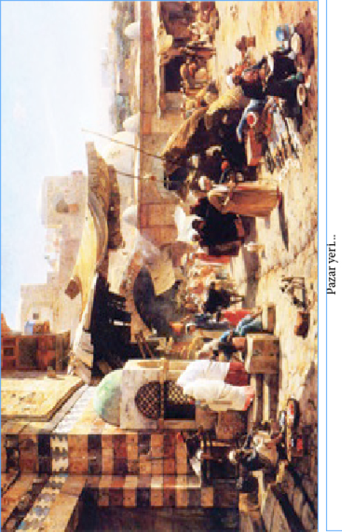
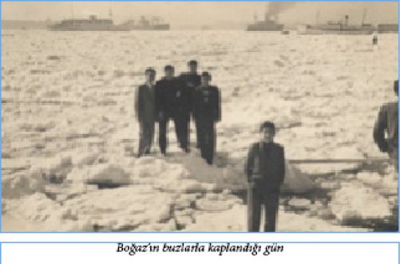

TOMBALAK AHMET BEY
II. Abdülhamit’in saltanatının son devirlerinde Fatih ve civarında yaşayan Tombalak Ahmet Bey adında bir mahalle delisi vardı. 40-50 yaşlarında, kısa boylu, şişman, yüzü düzgünce bir adam olan bu meczup kafasında püskülsüz bir fes, fesin ibiğinde bir sarımsak ve mavi boncuk, pantolonu üzerine de kısa bir entari giyer ve gün boyu ne dediği belli olmayan sesler çıkarıp etrafta dolanırdı. Avuçlarında ise her zaman kendisini kızdıran çocuklara atmak için küçük küçük taşlar taşırdı. İşin ilginç yanı, çocuklar onu “Yemiş yemiş sıçmamış, Tombalak Ahmet Bey!” diye bağırıp çağırıp kızdırmaya başlayınca bu taşları onlara fırlatan bu adamcağız, attığı aynı taşları sonra da geriye toplardı. Ne zaman ki hınzır çocuklardan biri bu taşlardan birini alıp da kaçarsa Tombalak Ahmet Bey çocuğun peşinden gider ve “Ne olur geri ver taşımı!” diye saatlerce gözyaşı dökerdi…
DEĞİŞMEYEN BELA: SANSÜR
Sultan II. Abdülhamit’in son dönemlerinde basını sansürlemekle görevli olan “Encümen-i Teftiş ve Muayene” kurulu bir ara işi öyle abartmıştı ki, sıradan bir aşk romanında geçen “bana bunu yapmaktan muradın nedir sevdiğim?” gibi cümlelerdeki “murat” kelimesi bile o sırada Çırağan Sarayı’nda mahpus olan 5. Murat’ı çağrıştırdığı gerekçesiyle sansürlenebiliyordu. Hatta “Yıldız Sarayı”nı çağrıştırıyorlar diye bir ara aritmetik kitaplarındaki ‘+’ ve ‘x’ işaretlerinin kaldırılması bile gündeme gelmişti.
İSTANBUL SEMALARINDA İLK UÇAK
Türkiye üzerinde ilk uçak uçuşu Sultan Mehmet Reşat’ın 27 Nisan 1912 tarihindeki cülus töreninde, İstanbul’da yapılmıştır.
Bir Fransız okulu olan Bleriot Uçuş Okulu’ndan 1912 yılında mezun olan Yüzbaşı Feza ve Teğmen Kenan Bey Türkiye’deki ilk uçuş okulunda göreve başlamışlardı. Bu iki pilotun Fransa’dan yeni alınan Deperdessin marka iki adet çift kişilik bir uçakla deneme uçuşu yapmalarına karar verilmişti. Fakat şiddetli bir fırtına sonucu Yeşilköy’de bulunan uçakların üzerindeki sundurmalar yıkılarak, uçaklar kullanılmayacak hale gelmişti. Bu nedenle alınan bu ilk uçaklar uçurulamamış, bunun üzerine birkaç ay sonra, Fransız Rep uçak fabrikasıyla yapılan sözleşmeyle 30.000 franka yeni bir uçak satın alınmıştı. Uçağın 14 Nisan’da yapılacak olan cülus törenindeki şenliklere katılması isteniyordu. Trenle ve parçalar halinde gelen uçak Yeşilköy tren istasyonları yakınında Bell ve beraberindeki iki teknisyen tarafından monte edilerek uçuşa hazır hale getirildi. Cülus törenine katılmak için gelen Mehmet Reşat törenin yapılacağı yer olan Hürriyet-i Ebediye tepesine (Okmeydanı) ulaştığında, Gordon Bell tarafından kullanılan uçak da 13.20’de Yeşilköy’den havalanmış, 13.30’da tören alanına ulaşarak tören kıtaları üzerinde resmî geçide katılmıştır. Uçağın başarılı uçuşunun ardından Rep firmasına yeni uçaklar sipariş verilmiş, on Türk genci daha pilotluk öğrenmek üzere Fransa’ya gönderilmişti.
TİTANİK FACİASINDAN
KIL PAYI KURTULAN TÜRK
İki binin üzerindeki yolcu 14 Nisan 1912’de “dünyanın hareket edebilen en büyük nesnesi” üzerinde büyük bir kabus yaşadı. Titanik battı ve 1500’den fazla kişi Atlas Okyanusu’nda öldü.. Dünyanın en çok bilinen, en çok yazılıp, çizilen ve çekilen bu büyük faciasından kıl payı kurtulanlar da vardı. Bunlardan biri de Doktor Besim Ömer Akalın’dı. Besim Ömer kadın ve çocuk hastalıkları konusunda ülkemizin öncülerinden biriydi. Askeri Tıbbiye mezunu olduğu için, “Besim Ömer Paşa” olarak tanınıyordu. Halk arasında yaygın bir ünü olan Besim Ömer’in, henüz yaşadığı yıllarda Haseki Hastanesi’nin bahçesine heykeli dikilmişti.
Besim Ömer 1912 yılında New York’taki bir sağlık kongresine gitmek için, yolculuğun bir ay öncesinden ünlü Titanik’te kendisine kamara ayırtmıştı. Gemiye, Titanik’in sonradan uğrayacağı Fransa’nın Cherbourg limanından binecekti. Ancak Besim Ömer’in treni Fransa’daki şiddetli yağış ve toprak kaymaları sonucu 16 saat gecikti. Ünlü doktor Cherbourg’a geldiğinde, Titanik limandan ayrılalı dört saat olmuştu. Ömer Besim New York’a gidecek bir başka gemiyi beklerken Titanik’in battığı haberi geldi. Üstelik ölen yolcular listesinde kendi adı da vardı! Cherbourg’dan binecekler arasında, vapuru kaçıran tek yolcu o idi ve adı da yolcu listesinden çıkarılmamıştı...
ZÜHTÜPAŞA’NIN OKUL YÖNETİMİ
Kadıköy’de, Fenerbahçe Stadı’nın karşısındaki Zühtüpaşa Mahallesi’ne adını veren II. Abdülhamit’in Maliye ve Maarif Nazırı (Maliye ve Milli Eğitim Bakanı) Ahmet Zühtü Paşa elli dönüm arazi içinde kırk odalı bir köşk yaptırıp Kızıltoprak’a yerleşmişti. Rivayet odur ki milli eğitimde yaşanan sıkıntıların üst üste geldiği bir dönemde Ahmet Zühtü Paşa: “Şu okullar olmasa milli eğitimi ne güzel idare ederdim!” demiştir.
ÖNCÜ BİR TÜRK KADINI:
BEDİA MUVAHHİT
“Dersaâdet Telefon Anonim Şirket-i Osmaniyesi” (Osmanlı İstanbul Telefon Anonim Şirketi) 1913 yılında şirketin santrallarında çalışmak üzere kadın memur almak üzere gazetelere ilan verir. Dönemin en etkin kadın hakları derneği olan “Osmanlı Müdâfaa-i Hukûk-ı Nisvan Cemiyeti” (Osmanlı Kadın Hakları Savunma Derneği) üyelerinden Bedra Osman Hanım’ın iş başvurusu kabul edilmeyince dernek yoğun bir kampanya başlatır. Bu arada 120 gayrimüslim kadın işe alınmıştır. Bir yıl sonraki sınavda Müslüman kadınlara örtülü bir kota uygulamak için, şirketin alacağı kadınlara Rumca ve çok iyi Fransızca bilme şartı konur, ama yedi Türk kadını her şeye rağmen işi almayı başarır. Bu yedi kadından biri sonraki yıllarda Türk tiyatro ve sinemasının da parlayan yıldızı olan Bedia Muvahhit’tir.

DEV YÜREKLİ MİNİK ADAM
Birinci Dünya Savaşı’nın ilk yılları... Harbiye Nazırı ve Başkumandan Vekili Enver Paşa, Doğu Cephesi’ni teftişe gittiğinde, kendisine sadece 110 cm boyu olan Ahlatlı bir genç “hediye” edilir. Ali Şamil’in işi artık İstanbul’daki sarayda Enver Paşa ile eşi Naciye Sultan’ı eğlendirmektir.
Birinci Dünya Savaşı’nda işler tersine gidince, Enver Paşa alelacele İstanbul’dan ayrılır. Birdenbire “efendisiz” kalan Ali Şamil, bu kez Padişah Vahdettin’in kızı Ulviye Sultan’ın sarayına alınır. Ali Şamil burada kırmızı sırmalı elbisesi ve heybetli, ipekli sarığı ile ortalıkta dolaşmakta sultanı eğlendirmeye çalışmaktadır. Ali Şamil, diğer saray soytarılarına benzememektedir. Hazırcevaplığı ve espritüelliğiyle kısa zamanda herkese kendisini sevdirmiştir. Ancak bütün şakacılığına rağmen Ali Şamil, kısa boyuna bakarak onunla alay etmeye kalkanları, birkaç dakika içinde ağızlarını açtıklarına pişman edecek bir yapıya da sahiptir.
Ulviye Sultan’ın eşi, Sadrazam Ahmet Tevfik Paşa’nın oğlu olan İsmail Hakkı Bey, Ali Şamil’i çok sevmektedir. Ulusal Kurtuluş Savaşımız başlayınca, İsmail Hakkı Bey eşi Ulviye Sultan’la bir geçimsizliği bahane ederek Anadolu’ya geçmek için gizlice hazırlık yapar. Bu işi herkesten sakladığı halde, Ali Şamil’den gizleyemez. Kendisi de savaşa katılmak isteyip de, İsmail Hakkı Bey kendisini yanında götürmek istemeyince Ali Şamil müthiş bir tehdit savurur: “Ya beni de götürürsün, ya da her şeyi sultana anlatırım!”
Kurtuluş Savaşı’na katılan, hatta Atatürk’le o dönemde tanışıp kadeh tokuşturan bu “dev yürekli minik adam” yaşamının daha sonraki yıllarını kışın Ankara, yazın ise İzmir’de geçirdi. İki kez evlenip boşandı. 1973 yılında 75 yaşında ve sağlıklı olduğunu bilinen Ali Şamil Güler’in sonraki yaşamı hakkında bilgi bulunamamıştır…
İŞÇİ BİR MİLLETVEKİLİ
1920’deki son Osmanlı Mebusan Meclisi’ne (İttihat ve Terakki yönetimince) İstanbul Milletvekili olarak gönderilen Numan Usta, Tophane Askeri Sanayi Okulu’nu bitirmiş ve Tophane ile Zeytinburnu fabrikalarında çalışarak ustalığa yükselmiş, fişekçi ustası bir işçiydi. Mebusan Meclisi dağıtılınca, İngilizler tarafından Malta’ya sürüldü ve 1921 yılına dek Malta’da sürgün olarak yaşadı. İlk TBMM’de de milletvekili olarak görev yapan ve 1885 Kasımpaşa doğumlu olan Numan Usta 1923 yılı seçimlerinde aday olmadı (ya da gösterilmedi) ve 1934 yılında İstanbul’da vefat etti. Vefatının soyadı yasasından önce olduğunu tahmin ettiğimiz için, soyadı kullanıp kullanmadığını belirleyemedik…
BİR ZAMANIN BOĞAZİÇİ VAPUR SEFERLERİ
Boğaziçi’nde yolcu taşımacılığı yüzyıllar boyunca bir, iki, üç veya beş çifte kayıklar ve Pazar kayıkları ile yapılmıştır. Hem yük, hem de yolcu götüren Pazar kayıkları da Boğaziçi köylerinin cami ve mescitlerine vakıf olarak hayır sahipleri tarafında yaptırılır, kürekçi ücretleri ödendikten sonra, geliri ile bu ibadethanelerin ufak tefek tamirleri yaptırılırdı. Kırım Savaşı’ndan sonra iki İngiliz girişimci Boğaziçi’nde buharlı vapur işlettiler… Fakat bu pek kısa sürdü, hükümet işlerine engel oldu ve İstanbul ile Boğaziçi köyleri arasına iki tersane vapuru tahsis etti. Bunlardan biri Rumeli kıyısına, diğeri Anadolu kıyısına olmak üzere günde ancak iki sefer yapılıyordu. Geceleri Boğaz’da demirliyorlar, sabahleyin köylerden yolcuları toplayıp İstanbul’da Sirkeci iskelesine geliyorlar, akşamları da Boğaz’a dönüyorlardı. Boğaz köylerinde vapur iskeleleri yoktu, halk vapurlara kayıkla gidiyor ve köy önünde duran vapurlardan, aynı şekilde kayıklara binip dönüyordu…

Tıpkı açıkta demirlemiş posta gemileri gibi… Son durak olan köy Rumeli yakasında İstinye, Anadolu yakasında Kanlıca idi. Vapurlar bu köylerden alacakaranlıkta, akşamları da Sirkeci iskelesinden ezana doğru, alaturka saat on bir sularında kalkıyordu. Asıl ilginç olan şu ki; bu vapurlarda bilet usulü yoktu. Babıâli’de Beylikçi Odası’nda bir abone defteri açılmıştı, herkes aylık üzerinden ücretini peşin yatırıyordu. Bu uygulamanın şimdiki aylık abonman kartına çok benzemesi rastlantı değildir. Tespit edilen ücret cetveli de şöyledir:
• İstanbul’dan Kandilli’ye ve Rumelihisarı’na gidecek bir efendi gidip gelme: ayda 250 kuruş.
• İstanbul’dan Kanlıca’ya ve İstinye’ye gidecek bir efendi gidip gelme ayda. 300 kuruş. Bir efendi bu ücretle yanında bir uşak götürebilir, bir uşak daha götürecek olursa ikinci uşak için 120 kuruş daha öder. Bir efendi yanında ikiden fazla uşak götürecek olursa, ikiden fazlası için toplu para ödemez, bu fazla uşaklar için köylere çıktığında orada bekleyecek memura adam başına 100’er para öder.
• Sair ahalinden, Beylikçi Odası’na para yatırmayıp da icabında vapurla gidip gelmek isteyen her seferinde karaya çıktığında görevli memura, Kandilli ile Rumelihisarı için 100’er para, Kanlıca ile İstinye için 3’er kuruş verir.
Şirket-i Hayriye’nin 1854’teki kuruluşu, Boğaziçi trafiğinde büyük bir yenilik olmuştur. Böyle bir şirketin kurulması gereğini ilk düşünenler de iki Türk veziri, Sadrazam Keçecizade Fuat Paşa ile Adliye Nazırı Müverrih Cevdet Paşa’dır… O zamanlar her ikisi de Babıâli efendisi bulunuyormuş. Bir yaz Bursa’ya gitmişler. Kaplıcada, bellerinde peştamal, havuz kenarına oturup sohbet ederlerken söz Boğaz sefalarına, oradan tersane vapurlarının düzensizliğine gelmiş. İki genç adam heyecana kapılmışlar. Hemen kaplıcanın soğukluğuna çıkıp hamamcılardan hokka kalem ve kâğıt istemişler ve Boğaziçi’nde vapur işletmek için kurulacak bir şirketin ilk nizamname müsvettesini kaplıca soğukluğunda, ayaklarında nalın, bellerinde peştamal, çıplak hamam kılığı ile yazmışlar…
SÜREYYA PAŞA’NIN HAYIRLI İNADI
İstanbul eski milletvekili Süreyya İlmen (Süreyya Paşa) (1874 – 1955) cumhuriyetin ilk yıllarında İstanbul ve özellikle Kadıköy’de batılılaşma eylemleri ile isim yapmış, ilginç ve hayırsever bir kent hizmetleri önderidir. Birçok kültürel ve sosyal eğitim ve spor amaçlı girişimlere öncülük etmiştir. İstanbul’un işgali döneminde Eğitim Bakanlığı’nın okullara ödenek verememesi nedeniyle, Kadıköy’deki bir okul yararına kiliseye bağlı Apollon Tiyatrosu’nda (günümüzde Kadıköy REXX Sineması olarak bilinmektedir) bir gece düzenlemek isteyen Süreyya İlmen Paşa, kilisenin çok para istemesi üzerine kendi deyimi ile “onuru yaralanıp” Kadıköy’e modern bir sinema ve tiyatro binası yaptırmaya karar verir. Süreyya Paşa Almanya ve Fransa’da bulunan tiyatroları örnek alarak, iki yılda yaptırdığı Türkiye’nin ilk çağdaş tiyatro binası, “Süreyya” opereti ile 7 Mart 1927 de görkemli bir galayla açılır.
HER DERDE DEVA SÜLÜK !
Eskiden Nisan ayının sonlarına doğru İstanbul sokaklarında şişe içine doldurdukları sülükleri satan ‘sülükçüler’ ortaya çıkardı. Çeşitli çiçeklerin, özellikle de güllerin üzerinden topladıkları sülükleri şişelere dolduran bu adamlar mahalle aralarında dolaşıp bu sülükleri satarlar, bedeninde yara, iltihap vs. olanlar da bu sülükleri alarak yaralarının üzerine koyarlardı. Sülükler yaralar üzerindeki iltihabı emdikleri için gerçekten de yaraların kısa zamanda iyileşmesine yararlardı. Geneli Çingene olan sülükçüler kısa dönemli olmasına rağmen, bu işlerinden epey bir para kazanırlardı.
ERKEK VOLEYBOL TAKIMINDAKİ KADIN
Suphiye Rıfat38 Hanım, Fenerbahçe’nin 1927, 28 ve 29 yıllarında yenilmeyen voleybol takımında beş erkek oyuncuyla birlikte yer aldı. Tamamı Yüksek Mühendis Mektebi (bugünkü Teknik Üniversite) öğrencilerinden kurulan bu şampiyon takıma, 1928 yılında aynı okulun kız öğrencilerinden Suphiye Rıfat da katılmıştı. Beş erkek ve bir kadından oluşan bu takım yenilmeden İstanbul Ligi şampiyonluğunu kazandı. O tarihten bu yana da bu olayın bir benzeri daha yaşanmadı.
38 Bazı kaynaklarda bu ad “Sabiha Rıfat” olarak geçmektir. Kanımızca, doğumda “Suphiye” olan ad, zaman içinde “Sabiha” olarak değişmiş olsa gerektir…
Aynı zamanda Fenerbahçe kız voleybol takımının da kaptanı olan Suphiye Rıfat ‘Türkiye’nin ilk kadın mühendisi’ unvanını da taşır. Daha sonra aldığı Güreyman soyadı ile çok sayıda esere imza atmıştır. Anıtkabir’in inşaatında da kontrol şefi olarak görev yapmıştır.
ATLAS PASAJI, AT AHIRIYDI
Bugün İstiklal Caddesi üzerinde bulunan meşhur Atlas Pasajı ilk yapıldığı zaman cins atların korunduğu bir at ahırı ve aynı zamanda da bu atlara çeşitli hünerler öğretilen bir cambazhaneydi. Bina Oskeperan39 Ermeni Katolik Vakfı’nın malıydı ve 1932 yılında geçirdiği esaslı bir tadilattan sonra Moulin Rouge adında bir gece kulübü olarak açılmış ve o tarihten bu yana çeşitli müzikhol ve sinemalara ev sahipliği yapmıştır.
39 İstanbul Ansiklopedisi böyle yazmasına rağmen, biz yaptığımız araştırmada bu adda bir cemaat vakfına rastlamadık. Belki baskı hatası, belki de başka bir yanlışlık söz konusu olmalı…
SULTANAHMET MİTİNGİ’NDEKİ
İKİNCİ KADIN
1919’da, İstanbul’un işgalini protesto için yapılan mitinglerde en ateşli konuşmaları yapanın Halide Edip Adıvar olduğu söylenir hep, ama yine orada olan ve konuşmalarıyla halkı galeyana getiren bir kadın daha vardı: Nakiye Elgün. 1882’de İstanbul’da doğan ve Kız Öğretmen Okulu mezunu olan Elgün, kadınların ilk kez oy kullandığı 5. dönem TBMM seçimlerinde meclise giren 17 kadın milletvekilinden biriydi. Diğerleri: Mebrure Gönenç (Afyonkarahisar), Sabiha Gökçül Erbay (Balıkesir), Şekibe İnsel (Bursa), Huriye Öniz Baha (Diyarbakır), Dr. Fatma Memik (Edirne), Fakihe Öymen (İstanbul), Satı Çırpan, (Ankara), Ferruh Güpgüp (Kayseri), Behire Bediş Morova (Konya), Mihri Pektaş (Malatya), Meliha Ulaş (Samsun), Fatma Esma Nayman (Seyhan), Sabiha Görkey (Sivas), Seniha Hızal (Trabzon), Benal Nevzat Arıman (İzmir), Türkan Örs Baştuğ (Antalya), Hatice Özgener (ara seçimle seçilmiştir)…
Elgün ilk seferi dahil, toplam üç dönem Erzurum milletvekili olarak görev yapmıştır. Adı bugün İstanbul, Şişli’de bulunan ‘Nakiye Elgün Sokak’ta yaşatılmaktadır.
SANATÇI ŞEHZADE
Son Osmanlı veliahdı ve son halife olan Şehzade Abdülmecit Efendi çok iyi bir ressam olmanın yanı sıra iyi de bir keman sanatçısıydı. Aralarında Arapça, Farsça ve Fransızcanın da bulunduğu altı dil bilen Abdülmecit Efendi’nin yaptığı, geneli büyük boyutlu olan tablolarının sayısının iki yüzden fazla olduğu tahmin edilmektedir.
ALBERT EINSTEIN’DAN
ATATÜRK’E MEKTUP
II. Dünya Savaşı’na yaklaşılan yıllarda Almanya özellikle Yahudi kökenli bilim insanları ve sanatçılar için yaşanılmaz bir yer haline gelmişti. Einstein o dönem Atatürk’e kırk bilim insanının adını önermiş ve Atatürk çok başarılı bu bilim insanlarını Türkiye’ye davet etmiştir. Bu bilim insanları İstanbul Üniversitesi ve Ankara DTCF’de görev alarak, ülkemizde modern bilimin ve üniversitenin başlamasına diğer Türk bilim adamları ile birlikte öncülük etmişlerdir. Aşağıda Einstein’in Atatürk’e bu konu ile ilgili olarak yazdığı mektup vardır. Bu mektup bugün, Başbakanlığa bağlı Cumhuriyet Arşivi’nde bulunmaktadır. Dönemin Başbakanı İsmet İnönü ve Milli Eğitim Bakanı Reşit Galip Bey’in imzalarıyla...
Ekselansları Atatürk,
OSE Dünya Birliği’nin şeref başkanı olarak, Almanya’dan kırk profesörle doktorun bilimsel ve tıbbi çalışmalarına Türkiye’de devam etmelerine müsaade vermeniz için başvuruda bulunmayı ekselanslarından rica ediyorum. Sözü edilen kişiler, Almanya’da halen yürürlükte olan yasalar nedeni ile mesleklerini icra edememektedirler. Çoğu geniş tecrübe, bilgi ve ilmi liyakat sahibi bulunan bu kişiler yeni bir ülkede yaşadıkları takdirde son derece faydalı olacaklarını ispat edebilirler.
Ekselanslarından ülkenizde yerleşmeleri ve çalışmalarına devam etmeleri için izin vermeniz konusunda başvuruda bulunduğumuz tecrübe sahibi uzman ve seçkin akademisyen olan bu kırk kişi birliğimize yapılan çok sayıda müracaat arasından seçilmişlerdir. Bu ilim adamları hükümetinizin talimatları doğrultusunda kurumlarınızın herhangi birinde bir yıl boyunca hiçbir karşılık beklemeden çalışmayı arzu etmektedirler.
Ekselanslarının sadık hizmetkârı olmaktan şeref duyan,
Prof. Albert Einstein
TAKSİM’DE BEBEK SERGİSİ
1936 yılında İstanbul’da, Taksim’de çok ilginç bir sergi açılmıştı: Bebek Sergisi. Belediye Bahçesi’nde açılan bu sergiyi Kızılay ve Kızılhaç gibi uluslararası örgütler desteklemiş ve sergiye yirmi ülke katılmıştı. Sergi sırasında düzenlenen “Uluslararası Bebek Yarışması” da büyük ilgi görmüş, günlerce basında yer almıştı.
ÖĞLEN FUTBOLCU, AKŞAM BASKETBOLCU !
Türk, hatta dünya spor tarihinin en olağanüstü olaylarından biri de Can Bartu’nun aynı gün içinde futbolcu olarak Beşiktaş’ın, basketbolcu olarak Galatasaray’ın canını yakması olmuştur. 24 Mart 1957 günü saat 14.30’da Mithatpaşa Stadı’nda yapılan futbol maçını 4-2 kazanan Fenerbahçe’nin iki golü genç Can Bartu’dan gelmişti. Akşama ise Spor ve Sergi Sarayı’nda Galatasaray’la basket maçları vardı. İlk kez radyodan anlatılan bir basket maçıydı bu üstelik ve spiker de Eşref Şefik’ti. Bu maçın bir başka özelliği daha vardı: İlk kez Fenerbahçe’nin soyunma odasına masör gelmişti. Mithatpaşa’daki çamur deryasından çıkan Can Bartu’ya masaj yapmak için... Sonunda Fenerbahçe o akşam basketbolda Galatasaray’ı yenmişti. Gündüz Beşiktaş’a iki gol atan Can’ın, akşam Galatasaray’a attığı basket sayısı ise 36 idi.
BOYKOTÇU FINDIK ALİ
1940’lı yıllarda Anadoluhisarı’nda yaşayan Fındık Ali adında bir adam vardı. Bu adam sandalının içine küçük bir ocak koymuştu ve orada patlattığı mısırları Hisar’dan Çubuklu’ya kadar uzanan bölgede dolaşa dolaşa satardı. Asıl mesleği balıkçılık olan bu adam bir ara her nedense kunduracı esnafına çok kızmış ve kendince bir boykot uygulayarak yıllarca ayakkabı giymemişti. Havalar idare ettiği sürede yalınayak gezer, hava çok bozduğunda ise ayağına geçirdiği nalınları takırdata takırdata dolaşır durumunu soranlara da “Kunduracıları boykot ediyorum” derdi şişine şişine…
ÜNLÜ AKTÖR KEDİ ‘TEKİR’
“1930 yılında İstanbul Şehir Tiyatrosu’nda doğmuş, tiyatro sanatçılarının kucaklarında büyüyüp yetişmiş, yıllar boyunca birçok oyunda rol alarak sahneye çıkmış ve her rolünün hakkını vermiş bir oyuncudur. 23 Aralık 1952’de, 22 yaşında öldüğü zaman Şehir Tiyatrosu sanatçılarının gözyaşları arasında tiyatro bahçesinin bir köşesinde toprağa verilmiştir.”
Yukarıda okuduğunuz kısa yaşam öyküsü İstanbul Şehir Tiyatrosu’nun çok ünlü kedi-oyuncusu “Aktör Kedi Tekir”in yaşam öyküsüdür ve İstanbul Ansiklopedisi’nin aynı adlı maddesinden alınmadır…
OSMANLI KORKUSU
1534 yılında Viyana’daki St. Stephen Katedrali’nde Osmanlı akıncılarını gözlemesi ve akıncıları görünce çan çalarak haber vermesi için bir memuriyet kuruldu. Bu memuriyet Viyana Belediye Meclisi’nce: “Artık bir Osmanlı tehlikesi kalmadığından böyle bir memuriyete gerek yoktur” denilerek iptal edildiğinde takvimler tam 1956 yılını (tam 422 yıl sonra) gösteriyordu.
İSTANBUL BOĞAZI’NIN DONDUĞU GÜN
İstanbul 1954 yılında da tarihi kışlarından birini yaşamıştı. 25 Şubat sabahı İstanbul Boğazı’na bakan kent sakinleri gözlerine inanamamışlardı; Boğaz’da devasa buz parçaları yüzmekteydi ve Boğaz’ın bazı bölümleri ise tamamen buzlarla kaplanmıştı. Çok sayıda insan bu tarihi fırsatı kaçırmayıp, İstanbul Boğazı’nı yürüyerek geçiyor, bazıları ise buz parçaları üzerinde Türk bayraklarıyla pozlar veriyordu. Uzun yıllar önce yaşanan bu ilginç olayın kaynağı Tuna Nehri’ne uzanıyordu. Romanya’dan Karadeniz’e dökülen Avrupa’nın en uzun nehri, o kış donmuş ve üzerinde ulaşım yapılamaz hale gelmişti. Patlayıcılarla parçalanan buz parçaları Karadeniz boyunca sürüklenerek İstanbul Boğazı’na gelmişti. Boğaz’da sıkışarak birleşen bu parçalar Avrupa ile Asya kıtasını birleştirmişti.
ÖMÜR BİTER,
İSTANBUL ANSİKLOPEDİSİ BİTMEZ!
Tatlı dili ve kıvrak anlatımıyla, bu kitabın yazarı dahil birçok insana tarih okumayı sevdirmiş olan tarihçi-yazar Reşat Ekrem Koçu’nun kuşkusuz en önemli eseri de yayımlamaya başladığı, ancak parasızlık yüzünden 11. ciltte yarım kalan “İstanbul Ansiklopedisi”dir. Eski İstanbul’u sokaklarından derelerine, çeşmelerinden saraylarına her türlü mekanını ve padişahlarından sokak delilerine, sanatçılarından kabadayılarına kadar her türlü insanını anlatarak tanıtmayı amaçlayan bu anıt eser 11. cildinde yarım kaldığında henüz “Gökçınar” maddesine kadar gelebilmişti.
SAĞLIKLI “ÇİŞ” KARABORSADA!
1960’lı yılların başı Türkiye’nin zor yıllarıydı. Almanya’ya işçi olarak gitme umudu ortaya çıkınca gitmek için yüz binlerce kişi başvurdu. İş için en önemli koşullardan biri sağlıklı olmaktı. Bu nedenle, sırası gelenler İş ve İşçi Bulma Kurumu’nun büyük şehirlerindeki merkezlerinde sıkı bir sağlık taramasından geçiriliyordu. Sonuçta, sağlamlar çürüklerden ayrılıyordu. Sağlam çıkamayanların oranı beşte birdi. Kısa boy bile umutların bitmesi için geçerli neden olabiliyordu. Bazı konularda ise işi garantiye almanın yolları vardı. O günlerde İş ve İşçi Bulma Kurumu’nun arkasındaki sokakta karaborsa “çiş” satılıyordu. Kendi idrarlarının bozuk çıkabileceğinden korkanlar “normal idrar”dan alıyor, tahlil için “sağlam garantili” bu idrarları götürüyorlardı.